About this manual
This manual covers what hundekraft 2.7.1 adds to the original OP-1. That is a lot: four hundekraft synths and two effects, chord mode, all of op1r 30 (synths, effects, drum+, sequencers, the quad LFO, the sample editor, tape and system additions), ultralazr's Musica Obscura sounds and Maiko Pruett's #249 toolkit.
Stock OP-1 features (tape, mixer, album, the factory synths and effects) are not repeated here. Teenage Engineering's own guide covers them well: teenage.engineering/guides/op-1/original. Where a new feature sits on top of a stock one, you get a sentence of context and a link.
How to read the controls
The OP-1 has four encoders. This manual calls them by colour, left to right: blue, green, white and orange. Some older op1r notes call the fourth one red. It's the same knob.
- Turn an encoder to change a value. Push an encoder to press it like a button.
- Press a key, or hold it while you do something else. "Shift +
 " means hold Shift and press .
" means hold Shift and press .  to
to  are the four keys under the screen. COM is the album key at the top right (COM is its Shift function),
are the four keys under the screen. COM is the album key at the top right (COM is its Shift function),  the sequencer key, and
the sequencer key, and  ,
,  and
and  the three tape-edit keys.
the three tape-edit keys.- Sound keys 1 to 8 are the eight small numbered keys to the right of , under the encoders. They store and load sounds.
The key screens have numbered dots. The list under the picture says what each number shows. Dot colour matches the encoder that moves that part.
Quick start
This chapter takes you from nothing to a working hundekraft OP-1 with presets. Most of the time goes to waiting while the OP-1 installs.
What you need
- An original OP-1. Not the OP-1 field: this firmware does not run on it.
- A USB cable and a computer with a current browser (Chrome, Safari, Firefox or Edge).
- Teenage Engineering's unmodified firmware file
op1_246.op1(R246). The workshop checks its fingerprint and refuses anything else, including op1r and other patched files. - Optional: a backup of your tapes and sounds. Updating keeps them, but a backup is cheap.
Build your firmware
The workshop builds the firmware in your browser. Nothing is uploaded and you don't need an account.
- Open the workshop at hundekraft.github.io/op1-workshop.
- Choose what you want. The foundation (op1r 30, Musica Obscura and chord mode) is always included. Everything else is ticked by default. Untick a synth or effect to keep it out of the OP-1's lists.
- Keep "300 user synth presets" ticked unless you want the stock limit of 100. The full preset pack has 112 presets, so with the limit at 100 it doesn't even fit: the OP-1 drops the rest when it syncs.
- Drop
op1_246.op1on the page, or choose it. The page checks the file and says so when it's the right one. - Press "Build my firmware". The first build downloads the Python runtime the builder uses, so it takes a little longer.
- When the page says "Verified. Your firmware is ready to download.", download the firmware (
.op1) and the matching preset pack (.presets.zip).
Install it on the OP-1
This is the OP-1's normal firmware update. It keeps your tapes, album and sounds.
- Switch the OP-1 off. Hold COM and switch it on. The firmware update menu appears.
- Press to choose "Upload firmware".
- Connect the OP-1 to the computer. It appears as a disk.
- Copy the hundekraft
.op1file to that disk. - Eject the disk on the computer, or press COM. The OP-1 unpacks and writes the firmware. This takes a few minutes.
- When the screen says "Please restart your OP-1", switch it off and on again.
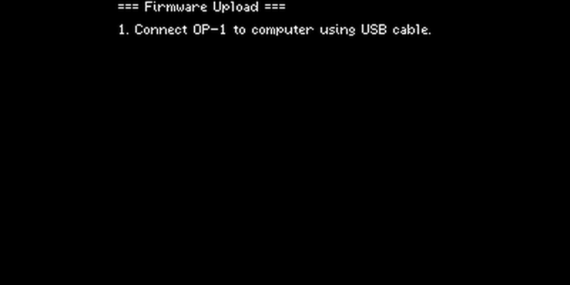
The boot screen now shows "hundekraft 2.7.1" under the logo, and "feat. op1r 30 + maiko #249" if you kept the Maiko toolkit. That's how you know it worked.
Make your first sound
- Press
 , then hold Shift and press . The synth list opens.
, then hold Shift and press . The synth list opens. - Turn blue to wavetable (or any synth in your build) and press to load it.
- Play a few keys. The wave factory on screen comes alive while you play.
- Turn blue slowly. The sound morphs through eight wave shapes, from sine to digital.
Every synth and effect in this manual is picked the same way: Shift + for synths, Shift +  for effects, Shift + for LFOs and Shift + for sequencers.
for effects, Shift + for LFOs and Shift + for sequencers.
Install the presets
Presets are not part of the firmware. They come in the preset pack and go in through disk mode.
- Unzip the
.presets.zipfile. Inside is asynthfolder with one folder per engine. - On the OP-1, hold Shift and press COM, then press for disk mode.
- Copy the folders inside
synth/into thesynth/folder on the OP-1 disk. - Eject the disk. The OP-1 restarts by itself, syncs the new files ("Sync after reboot") and waits for a key press.
The presets are in the preset browser: in synth mode hold Shift and press a sound key, turn blue to the engine folder and green to the preset.
Go back, or get unstuck
The firmware update menu is always there, even if the OP-1 hangs on the boot screen.
- To try a different build, install it the same way: hold COM while switching on, then upload the new
.op1. - To go back to stock, install the original
op1_246.op1the same way. - If the OP-1 stops on the boot screen, hold COM while switching on and install a new build. Builds from 2.5 and 2.6 had a boot hang when not all six hundekraft sounds were selected. 2.6.1 and later boot with any combination.
Where things live
Most new features hide behind a key combination. This table is the map. Each row links to its section.
| Feature | How to get there |
|---|---|
| hundekraft synths, op1r synths, Musica Obscura synths | , then Shift + |
| hundekraft effects, op1r effects, Musica Obscura effects | or  , then Shift + . As master effects: in the mixer, like stock , then Shift + . As master effects: in the mixer, like stock |
| Chord mode | Shift + , then |
| drum+ | , then Shift + , pick DRUM+ |
| Euclid, Dots, Oracle and Peal | Shift + |
| Quad LFO | or , then Shift + , pick QUAD |
| Sample editor | Hold (or ) and press |
| Tape undo and redo | Hold  and press and press  or or  |
| Tape markers and punch-in | Tape screen: push orange. Hold +  for punch for punch |
| Count-in | Tape stopped: hold and press  |
| Oblique Strategies | Shift + |
| Resource monitor, USB output, Settings | Shift + , then ,  or or |
| FILE storage view | Shift + COM, turn blue to FILE |
| Scale mode | , , hold Shift |
| Name a sound | Hold a sound key |
| MIDI CC control | From a computer or controller over USB |
Hundekraft synths
Four synths made for this firmware. Each has its own animated screen where every encoder moves something you can see. All four follow velocity, play up to six voices, and work with the OP-1's envelope (T2) and LFO (T4) like any stock engine. The LFO can sweep any of the four encoders.
Wavetable
Morphing waves. Analog ladder filter.
Two slightly detuned oscillators read eight single-cycle waves and morph between them. The sound then goes through a four-pole ladder low-pass filter that can scream when you push it. Think classic analog pads and acid lines, with some vocal and digital colours on top.
Load then Shift + pick wavetable
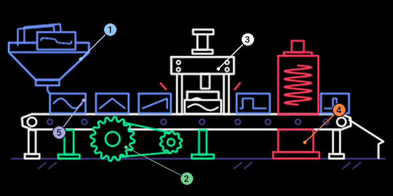
- 1Pointer on the wave rows: the wave blue has chosen
- 2Gears and shift lever: detune on green
- 3The press lowers into the funnel as white closes the filter
- 4Spring and bubbles: resonance on orange
- 5The live wave rides the conveyor while you play

Wave position. Morphs sine, warm, triangle, saw, square, pulse, vocal, digital

Detune between the two oscillators. Fattens and moves the sound

Filter cutoff

Filter resonance, up to self-oscillation. Also drives the filter harder
Try this
Each bar is a share of that encoder’s range. The encoders turn endlessly, so use it as a guide while you watch the screen, or load the named preset from the pack.
18%43%46%18%Long attack on T2. Preset: warm pad.
43%5%27%79%Sweep white while you play. Preset: acid.
0%3%92%95%A sine through a ringing filter. Preset: whistle.
Taffy
Elastic, CZ-style phase distortion.
Phase distortion in the style of Casio's CZ synths. A plain cosine is bent out of shape: the more you bend it, the brighter it gets. There is no filter. Brightness comes from the bend, so the sound stays clean and a little glassy.
Load then Shift + pick taffy
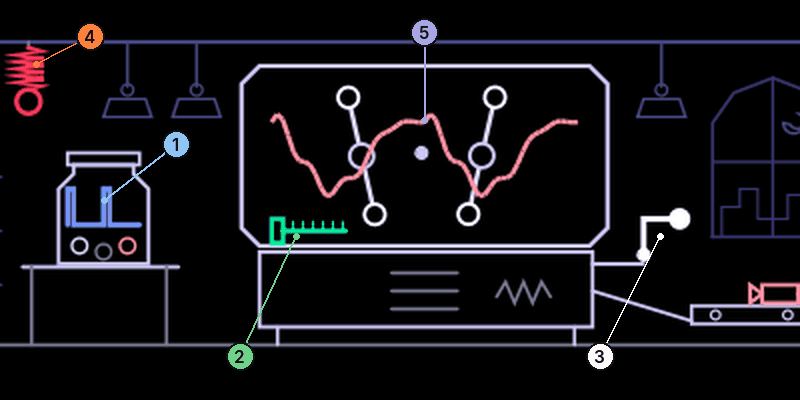
- 1The jar shows the wave shape on blue
- 2Tape measure: distortion on green
- 3Crank: envelope depth on white
- 4Spring: resonance on orange
- 5The pink ribbon is the live waveform
Wave shape. Saw, square, pulse, saw-pulse, morphing in between
Distortion amount. Bends the cosine toward the chosen shape
Envelope depth. Extra bend at the start of each note that fades in about 0.2 s
Resonance. Blends in the CZ resonant wave, which follows the distortion
Try this
Each bar is a share of that encoder’s range. The encoders turn endlessly, so use it as a guide while you watch the screen, or load the named preset from the pack.
0%27%67%0%Bright attack that settles. Preset: cz brass.
82%67%73%18%Hard, funky pluck. Preset: clav.
0%9%49%79%Resonant and glassy. Preset: glass keys.
Pew
Drawbar organ. Rotary speaker.
A drawbar organ through a rotary speaker. The nine drawbars are grouped in threes, so each encoder pulls out three bars at fixed ratios. The rotor has a horn for the upper bars and a heavier drum for the low ones, and both take time to speed up and slow down, like the real thing.
Load then Shift + pick pew
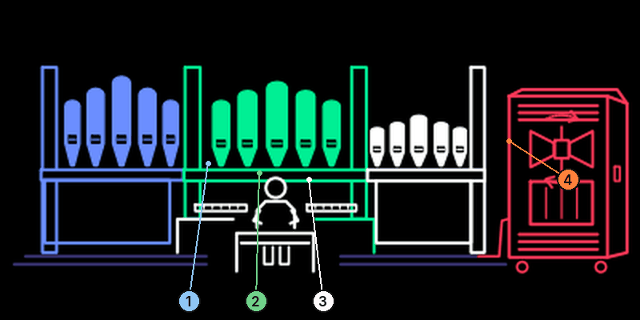
- 1Low drawbars on blue
- 2Middle drawbars on green
- 3High drawbars on white
- 4Horn, drum and the red arrows: rotor speed on orange
Low drawbars: 16', 8' and 5 1/3'
Middle drawbars: 4', 2 2/3' and 2'
High drawbars: 1 3/5', 1 1/3' and 1', plus key click
Rotor speed. Turn it fast to hear the horn and drum catch up
Try this
Each bar is a share of that encoder’s range. The encoders turn endlessly, so use it as a guide while you watch the screen, or load the named preset from the pack.
100%61%12%12%Full and slow. Preset: sunday.
100%100%37%92%Everything out, fast rotor. Preset: gospel.
79%24%0%37%Warm, no click. Preset: jazz.
Elg
Slow-moving drones with a low growl.
Elg is Norwegian for moose. Three saws per voice (the root, a detuned root and a third saw at an interval above) go through a growl drive and a resonant low-pass filter. A slow LFO moves the filter and the level, a little random drift moves the pitch, and every voice moves on its own, so chords breathe and drift apart.
Load then Shift + pick elg
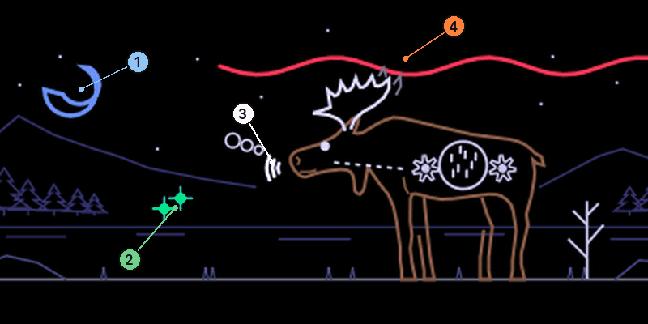
- 1The moon rises with the interval on blue
- 2Fireflies circle wider with detune on green
- 3Hum arcs at the mouth: timbre on white
- 4The aurora grows and waves with movement on orange
Interval of the third saw. Steps, not smooth
Detune between the saws. Slow beating to wide chorus
Timbre. Opens the filter and adds growl at the same time
Movement. LFO speed and depth on filter, level and pitch drift
Try this
Each bar is a share of that encoder’s range. The encoders turn endlessly, so use it as a guide while you watch the screen, or load the named preset from the pack.
20%27%43%37%Fifth above, slow swell. Preset: moose call.
60%37%37%92%Octave + fifth, lots of movement. Preset: northern light.
0%9%31%12%Unison, almost still. Preset: hum.
Hundekraft effects
Two effects with their own screens. They work on a synth, on the drums and as master effects in the mixer. Loading a preset resets the effect, so no old tail carries into the next sound.
Washer
Chorus, ensemble and flanger.
A chorus that turns into a flanger. Three taps of one short delay line are swept by an LFO a third of a turn apart, which gives the wide ensemble sound of old string machines. Add foam and the taps move closer and feed back until it's a jet flanger.
LoadShift + pick washer on a synth or drum slot
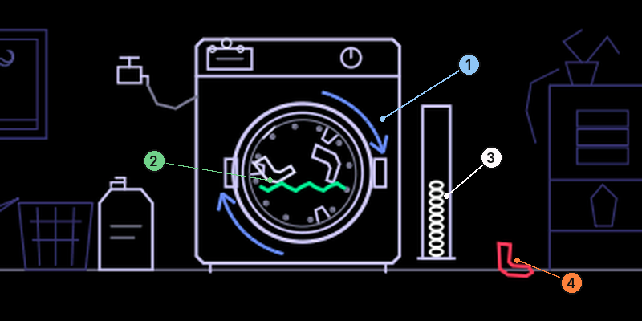
- 1Arrows around the door: speed on blue
- 2Water line: depth on green
- 3Foam in the tube: feedback on white
- 4The sock walks right as orange adds mix
LFO rate
Sweep depth
Chorus to flanger: shorter delay, more feedback
Adds the effect. At zero it's off
Try this
Each bar is a share of that encoder’s range. The encoders turn endlessly, so use it as a guide while you watch the screen, or load the named preset from the pack.
20%90%0%80%Slow, deep chorus. Preset: warm ensemble.
15%80%90%70%Slow jet flange. Preset: jet wash.
30%90%20%80%Thick and wobbly. Preset: swamp chorus.
Snowglobe
Shimmer reverb with a frozen heart.
A shimmer reverb. Four diffusers feed a network of four delay lines, and an octave-up pitch shifter in the feedback makes the tail climb an octave at a time. At the top of orange the tail freezes into a pad that holds until you turn back.
LoadShift + pick snowglobe on a synth or drum slot
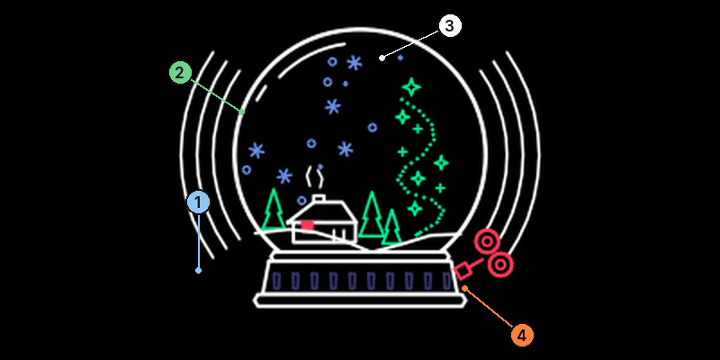
- 1Hourglass: decay on blue
- 2Sparkles spread with shimmer on green
- 3Halo: size on white
- 4Wind-up key: mix on orange. Keeps winding when frozen
Decay time
How much of the tail climbs an octave
Size of the space
Adds the reverb. The last few percent freeze the tail
Try this
Each bar is a share of that encoder’s range. The encoders turn endlessly, so use it as a guide while you watch the screen, or load the named preset from the pack.
90%70%80%70%Long, climbing tail. Preset: ice pad.
100%30%100%65%Huge, little shimmer. Preset: snowfield.
95%90%100%80%Shimmer all the way up. Preset: aurora.
To freeze a chord:
- Play and hold a chord with Snowglobe on, blue high.
- Turn orange all the way up. The screen frosts over.
- Let go of the keys. The frozen tail keeps ringing. Play over it.
- Turn orange back down to let it go.
Chord mode
Chord mode turns every key into a chord. It knows about scales and progressions, so you can play a whole song with one finger. It works with every synth, including the stock ones, and with every sequencer. It's off until you switch it on.
Open the chord page
- Hold Shift and press . You get the clock or an Oblique Strategies card. Either one works.
- Press . The chord page opens.
- Push orange to switch chords on. Push it again to switch them off.
- Press again to close the page. Chord mode stays on until you switch it off.
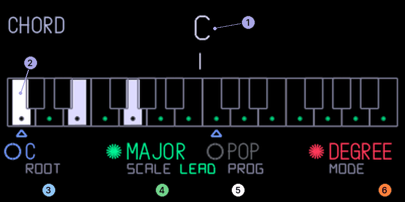
- 1Chord name and Roman numeral
- 2The chord on the keyboard. The bass is white, green dots mark scale notes
- 3Root on blue
- 4Scale on green. Below it: what black keys play
- 5Progression on white
- 6Degree or step mode on orange
The encoders
| Encoder | Turn | Push | Shift + push |
|---|---|---|---|
| blue | Root note | Chord colour: triad, sus4, sus2, 7th, add9 | |
| green | Scale (13 to choose from) | What out-of-scale keys play: LEAD, PASS or BORR | Voice leading on or off |
| white | Progression (16, plus your own "mine") | Degree mode: record a progression (push again to stop). Step mode: restart it | Degree mode: clear "mine" |
| orange | Degree mode or step mode | Chords on or off |
The scales are major, minor, dorian, mixolydian, lydian, phrygian, locrian, harmonic minor, melodic minor, phrygian dominant, pentatonic, minor pentatonic and blues.
Degree mode
Each key plays the chord that belongs to it in the chosen scale. In C major, C plays C major, D plays D minor, G plays G major, and so on. The key you press is always the bass note, so higher keys give higher chords, and the octave keys work as usual.
- Hold Shift while you press a key to play a dominant 7th on it. On the fourth degree Shift swaps minor and major (iv and IV), and on the raised fourth it plays a half-diminished chord.
- Keys outside the scale play what green push chose. LEAD plays a dominant 7th that leads into the next scale chord, PASS a diminished 7th passing chord, and BORR a borrowed chord (for some keys a slash chord, such as D/F# in major).
- blue push adds colour to the scale's triads in degree mode: sus4, sus2, the scale's own 7th, or add9. Shift chords, LEAD and PASS chords and step mode stay as they are.
Step mode
Turn orange to STEP. Now every key press plays the next chord of the progression on white. The key you press only sets the register. Hold Shift and press a key to step back.
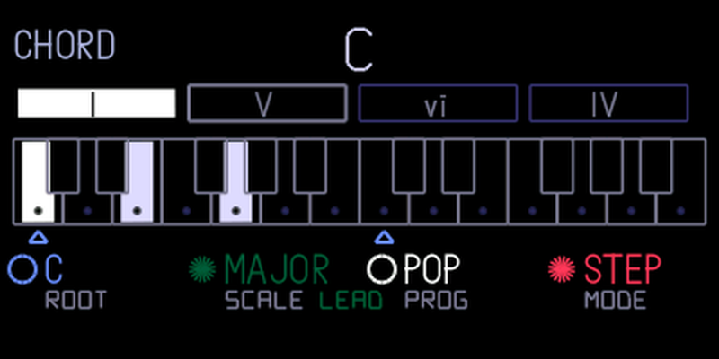
The progressions are pop, 50s, jazz, andalus, blues, canon, sad, royal, rock, circle, turn, epic, creep, soul, min251 and dreamy.
Record your own progression
- In degree mode, push white. The page shows "rec".
- Play up to 16 chords. Colours and Shift chords are recorded too.
- Push white again. Your progression is saved as "mine".
- Turn orange to STEP and white to "mine" to play it back one press at a time.
In degree mode, Shift + push white clears "mine". It follows the root, so you can transpose it with blue.
Good to know
- Chords play only in the POLY play mode. In mono, legato and unison each key plays a single note.
- A triad uses three of the six voices and a 7th uses four. Holding several chords steals voices from each other.
- MIDI out sends only the key you pressed, not the chord.
- With Maiko's scale mode on, keys snap to that scale first, so out-of-scale chords can't be reached. Switch scale mode off when you use chord mode.
- Settings and your recorded progression are saved and survive a restart.
op1r synths
op1r is pcppcp's custom firmware, and hundekraft is built on op1r 30. Its synths are picked like any other with Shift + .
Supersaw
Detuned saw stack.
Two detuned saws with a sub oscillator and drive. The trance lead and the hoover live here. The screen is a chainsaw: the chain teeth draw the waveform and the saw shakes with drive.
Load then Shift + pick supersaw
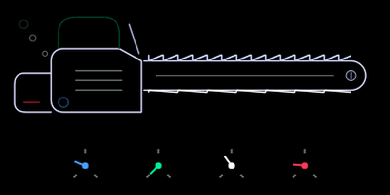
Detune between the two saws, up to about 1.6 %
Shape, from saw to square
Sub oscillator level (sine, one octave down)
Drive, 1x to 5x into a soft clipper
FM Bell
FM bells and e-pianos.
Two-operator FM for bells, e-pianos and metal. The clapper swings with the envelope and the rings beside the bell follow the modulation.
Load then Shift + pick fmbell
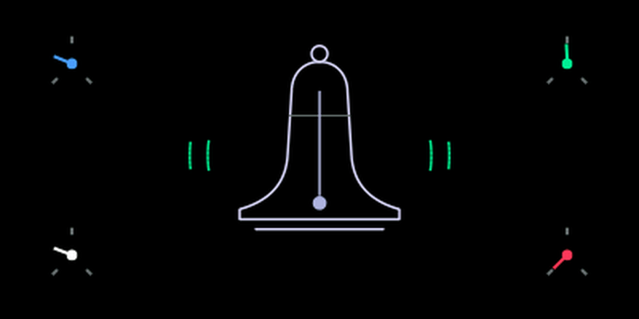
Modulator ratio, 0.5 to 8 in half steps
Modulation index (brightness)
How fast the index decays. More is more bell-like
Feedback on the modulator. Adds grit
Granular
Plays the slot's sample as grains.
A granular engine that plays a sampler recording as clouds of grains. C4 plays the recording at its original speed.
Load then Shift + pick granular
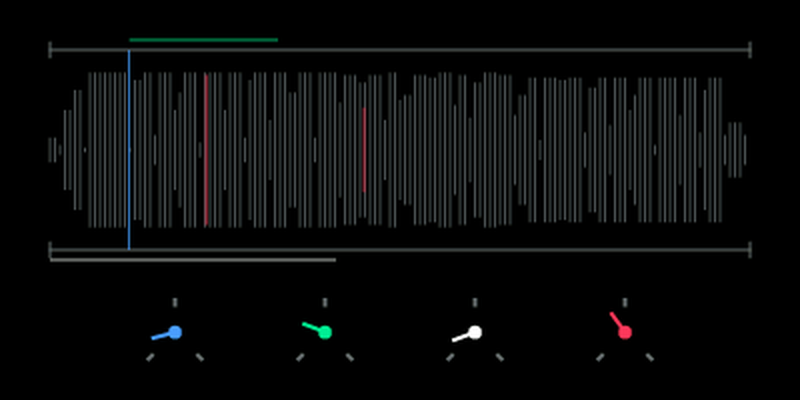
To get sound into it:
- On a granular slot, press the input key (the microphone key) and record, just like on the sampler. The slot stays granular.
- Or: pick SAMPLER, record or load a sample, then switch the slot to GRANULAR. It reads the sampler's recording.
Position in the recording
Random start jitter, and a little random pitch
How many grains overlap
Push: Page 2: sample gain 0x to 4x
Iter lab
A lab screen for the stock Iter.
op1r gives the stock Iter synth a new animated lab screen. The sound is the stock Iter; only the screen is new. The four gauges follow the encoders, the bubbles speed up with blue, and the corner dots count the voices that are playing.
Load then Shift + pick iter
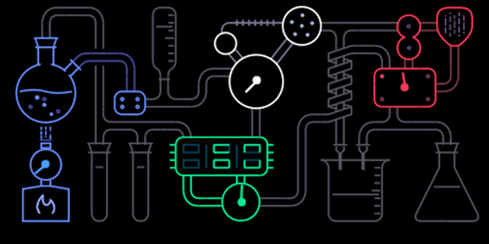
op1r effects
All three work on a synth, on the drums and as master effects.
Tape (echo)
Vintage tape echo.
A tape echo with a moving tape loop on screen. The animation is locked to the audio: a mark takes exactly the delay time to travel from the record head to the play head.
LoadShift + pick tape on a synth or drum slot
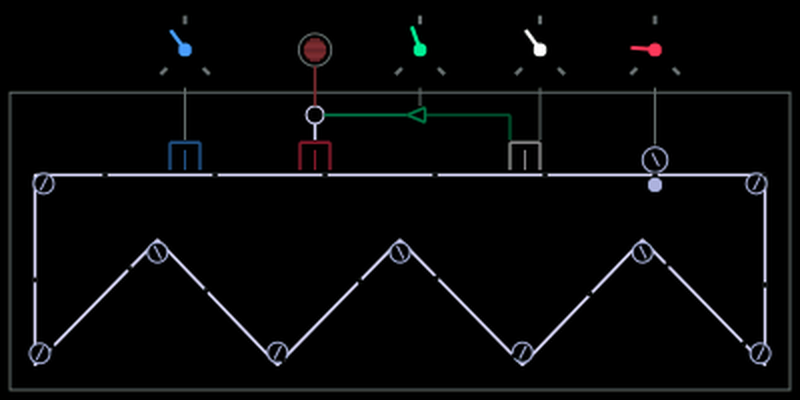
Age. Darker, more saturated repeats
Feedback. Above 100 % it self-oscillates, safely
Time. Glides like real tape speed, so the pitch bends while you turn
Clouds
Granular textures, after Mutable Instruments Clouds.
A port of Mutable Instruments Clouds in granular mode: 24 grains over a buffer of about 2.7 seconds. Push an encoder to switch it to its page-2 value.
LoadShift + pick clouds on a synth or drum slot
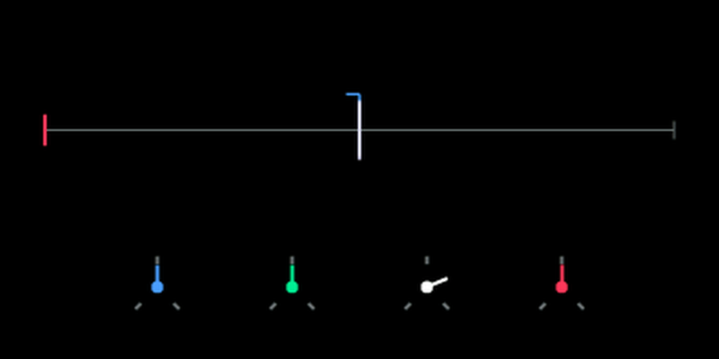
Position in the buffer
Push: Pitch, -24 to +24 semitones
Grain size
Push: Dry/wet
Density. Below the middle grains are regular, above random
Push: Reverb
Texture (grain window). Above 75 % adds diffusion
Push: Freeze on or off
Reverb
Reverb, after Mutable Instruments Elements.
A port of the Elements reverb from Mutable Instruments, drawn as Kali with art by DAN76. Her arms count the decay, the flames show the tone.
LoadShift + pick reverb on a synth or drum slot
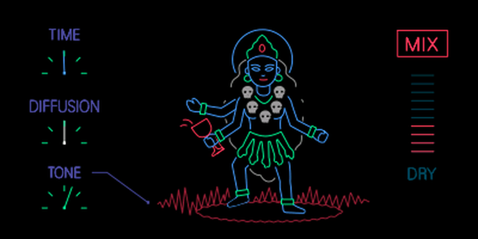
Time, up to near endless
Tone, dark to bright
Mix, dry to wet
Musica Obscura
Musica Obscura is ultralazr's set of six modules based on strange instruments from music history. hundekraft includes all of them: two synths, two effects and two sequencers. Each module has a page 2: push an encoder to reach it, push again to go back. The author's README has the full story behind each one, and sound demos.
Mixtur
Undertones below every key.
A subharmonic organ after Oskar Sala's Mixtur-Trautonium. Four dividers play undertones of the key: the key is the top note, and the dividers add notes at 1/n of its frequency below it. Two formant filters turn the result into vowels. It sounds dark, vocal and slightly unearthly.
Load then Shift + pick mixtur
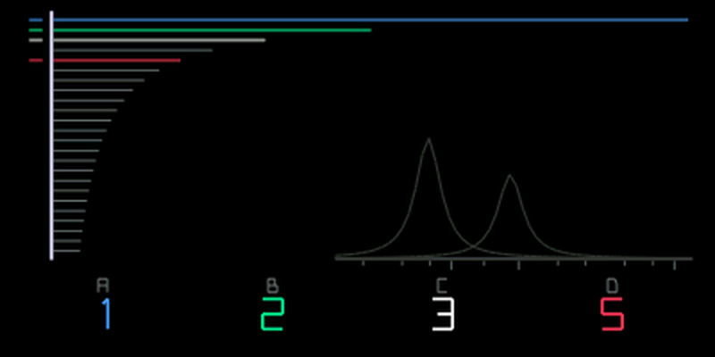
Undertone 1 to 24, or off
Push: Formant 1, 180 Hz to 4 kHz
Push: Formant 2, 500 Hz to 5.7 kHz
Push: Resonance
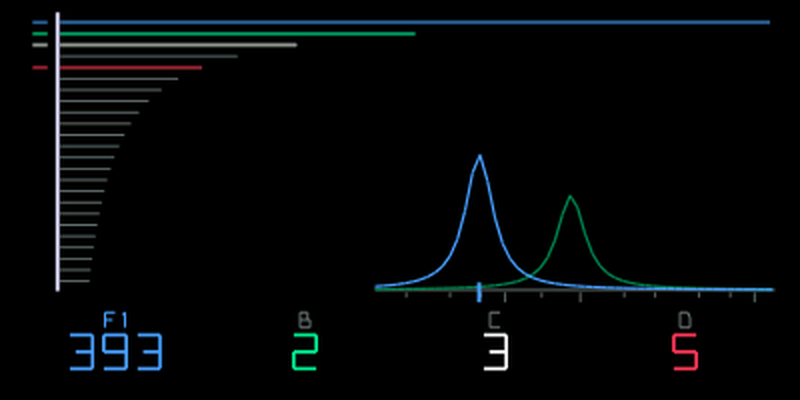
The default 1, 2, 3, 5 gives a minor chord under the key. Set the four dividers to different numbers: two dividers on the same number are muted. All four off is silence. Very low undertones fade out below about 40 Hz, so the bottom keys play fewer of them.
Arc
Duddell's singing arc from 1899.
William Duddell's singing arc from 1899: an arc lamp turned into an oscillator. Each voice goes from a clean sine to a reedy buzz to a screaming relaxation tone as you raise the current. Plasma noise makes the pitch wander. A second lamp can lock to the first, beat against it or go chaotic.
Load then Shift + pick arc
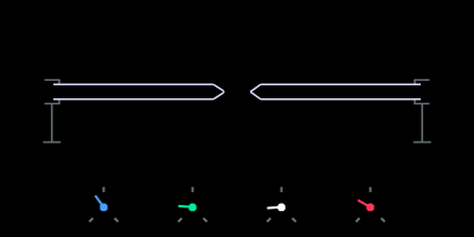
Sine, buzz, scream
Push: Second lamp ratio, 1/2 to 2, with stops at simple ratios
Even harmonics
Push: Coupling. 0 switches the second lamp off
Plasma noise and pitch wander
Push: Brightness
Strike and sputter: pitch dip and noise on each note, random re-strikes while held
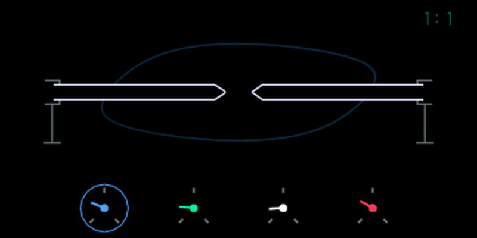
Palme
Twelve sympathetic strings and a gong.
The palm-shaped string loudspeaker of the Ondes Martenot. Twelve strings, tuned chromatically from a root, ring in sympathy with what you play. Page 2 morphs the soundboard into a gong.
LoadShift + pick palme on a synth or drum slot
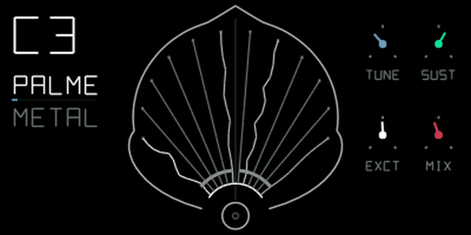
Root note of the 12 strings, C2 to B4
Push: Métallique: palm leaf to gong
Sustain, 0.25 s to 30 s
Push: Damping: dark felt to bright wire
How hard the input drives the strings
Push: Spread: detune up to ±35 cents
Dry, both, strings only
Push: latch
To make an endless drone:
- Play a chord through Palme.
- Push orange. The felt damper swings open.
- Stop playing. After about 0.3 s the strings hold their notes forever while the overtones fade.
- Play more to add notes. Push orange again to let everything ring out.
Latch is not saved with the sound.
In a room
Every pass of the loop goes through a room.
After Alvin Lucier's "I am sitting in a room" (1969). You record a phrase, and on every pass the loop plays through a model of a room and is recorded again. The room's resonances pile up, and after enough passes speech melts into a chord. The counter shows the generation.
LoadShift + pick in a room on a synth or drum slot
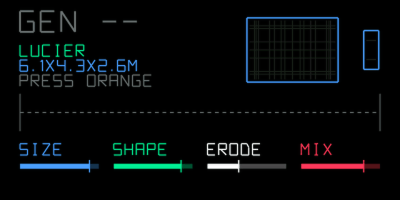
Longest wall, 0.8 m to 8 m
Push: Loop: free 0.5 s to 3.9 s, or synced 1/16 to 2 bars
CUBE, GOLDEN, BOLT or LUCIER
Push: Absorb: treble lost on each pass
How hard each pass is filtered
Mix, dry to the loop
Push: record (free) or arm (synced)
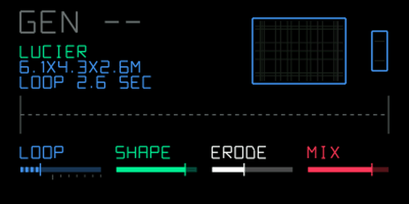
- Put In a room on the master effect for best results.
- Push blue to switch it to LOOP and set the loop length first. It's read when a capture starts. Push blue again to go back.
- Push orange to capture. In synced mode the capture waits for the next matching grid point and lasts exactly the loop length.
- Listen to the generations stack up. Push orange again to capture something new.
Oracle and Peal
Two sequencers. Oracle is a 16-step, four-lane sequencer based on geomancy. Peal plays English change ringing: hold 3 to 8 keys and it rings the changes on them. Pick them with Shift + . Their controls are described in the Musica Obscura README.
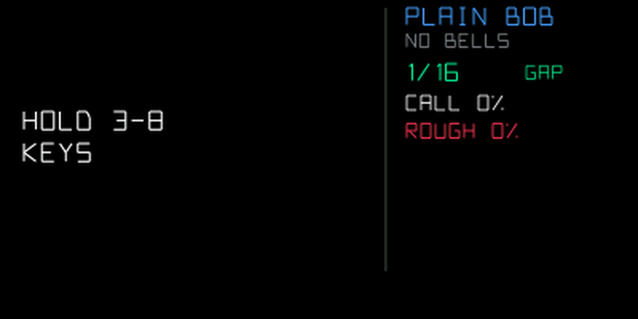
drum+
drum+ is a second drum instrument on top of a sampled drum kit. It adds per-pad sound design: pitch envelope, retrigger, drive, choke groups, an envelope and a filter for every pad. Pads you haven't touched sound like stock.
Switch a kit to drum+
- Press and load a sampled drum kit.
- Hold Shift and press . The drum type list opens.
- Turn blue to DRUM+ and press . The kit stays the same.
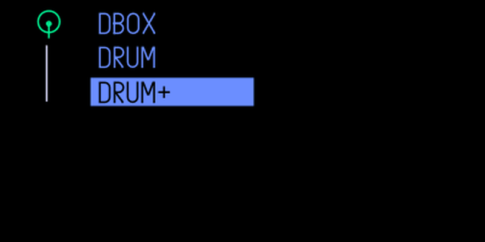
Load another kit or a DBOX to return to stock drums. A stock OP-1 loads a drum+ kit as a normal kit.
Page T1: play
Press . Play a pad to select it. Hold Shift for the second row.
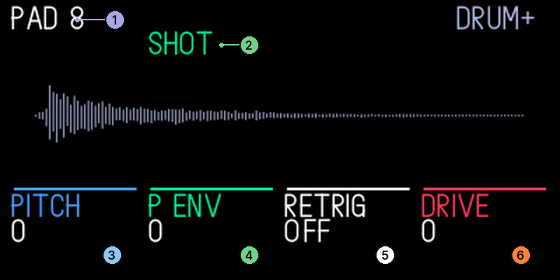
- 1The pad you are editing. Play a pad to select it
- 2Play mode, changed by pushing green
- 3Pitch on blue
- 4Pitch envelope on green
- 5Retrigger on white
- 6Drive on orange
| Encoder | Turn | Shift + turn | Push |
|---|---|---|---|
| blue | Pitch | Fine tune, ±50 cents | Reverse |
| green | Pitch envelope: starts up to ±48 semitones off and glides to the note | Glide time | Play mode: gate, one-shot, loop |
| white | Retrigger: 2 to 8 hits | Retrigger rate, 1/8 to 1/64, synced | Choke group: none or 1 to 4 |
| orange | Drive | Volume | Mono: a new hit fades the last one |
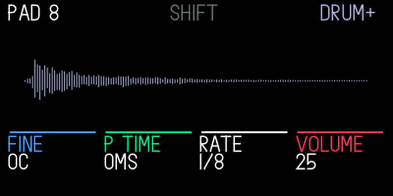
Page T2: envelope and tone
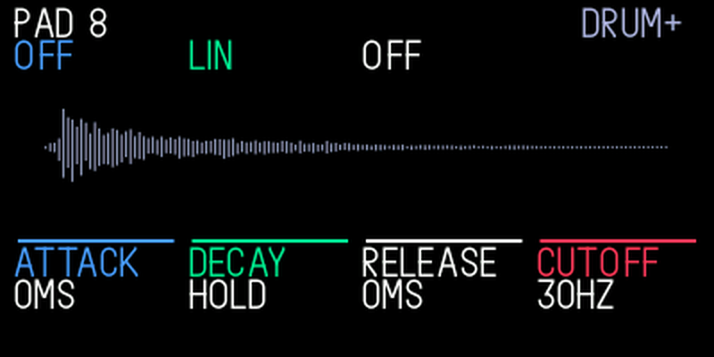
| Encoder | Turn | Shift + turn | Push |
|---|---|---|---|
| blue | Attack | Velocity to pitch, ±24 semitones | Envelope on or off |
| green | Decay | Humanize: random start delay and level | Linear or exponential |
| white | Release | Resonance | Filter: off, LP, HP, BP |
| orange | Cutoff, 30 Hz to 16 kHz | Velocity to cutoff | Velocity to start: softer hits start later |
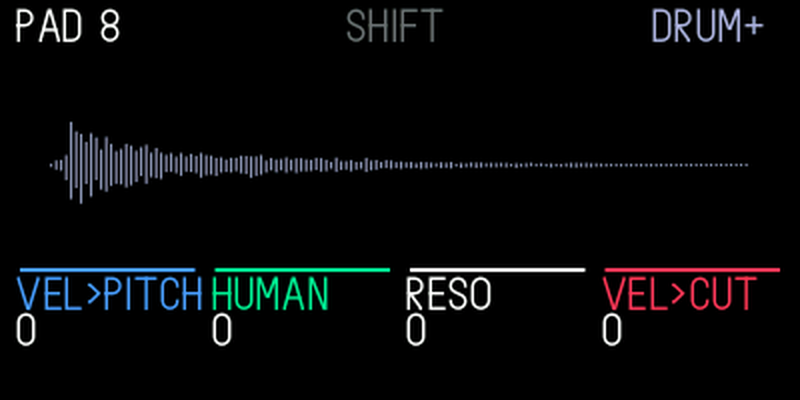
Turning attack, decay or release switches the envelope on. Turning cutoff or resonance switches the filter to LP. Times go up to about 4.6 s.
Sequencers
op1r adds Euclid and Dots, and Musica Obscura adds Oracle and Peal. Pick one with Shift + . Synth and drums each have their own sequencer. Both run at the OP-1's tempo and send MIDI notes.
Some keys work from any screen while one of them runs:
| Keys | Does |
|---|---|
| Shift + C# | Start all slots, or stop them all if any are playing. Hold too to start tape recording on the first step |
| Shift + G, A, B, C, D, E (the last six white keys) | Mute slot 1 to 6 |
| Shift + D# | Mute all |
| Shift + F, G, A, B | Pattern 1 to 4 |
, and copy, cut and paste the selected slot. With Shift they copy, cut and paste the whole pattern.
Euclid
Six rings, each playing one note in a Euclidean rhythm: a number of hits spread as evenly as possible over a number of steps. Stack a few and you get rhythms that sound far more worked out than they are.
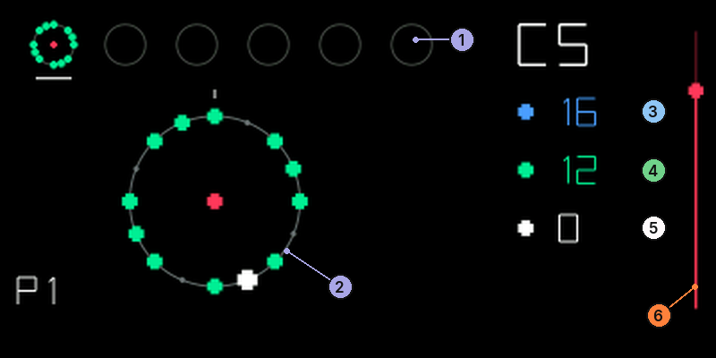
- 1Six slots. Shift + white selects one
- 2The pattern. The white square is the playhead, the red dot means running
- 3Steps on blue
- 4Hits on green
- 5Rotation on white
- 6Level bar. Turn orange right to start, left to stop
To build a pattern:
- Hold Shift and turn white to pick a slot (the rings at the top).
- Press a key to give the slot its note.
- Turn blue for steps and green for hits. Turn white to rotate the pattern.
- Turn orange right to start the slot. Turn it left to stop.
- Pick the next slot and repeat.
| Encoder | Turn | Push for page 2 |
|---|---|---|
| blue | Steps, 1 to 16 | Rate: 1/4 to 1/32, with triplets |
| green | Hits, 0 to the number of steps | Gate, 10 % to 100 % |
| white | Rotation. Shift + turn: select slot | Octave, -2 to +2 |
| orange | Right: start. Left: stop. Shift: all slots | Level (velocity) |
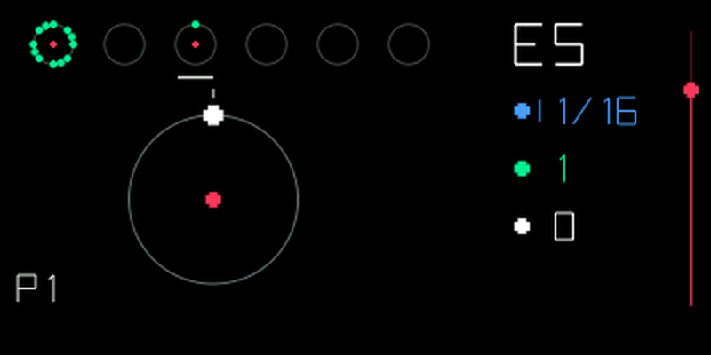
A slot without a note can be edited but won't start. Slots come back stopped after a restart.
Dots
Six slots of up to 64 steps each, all playing at once at 1/16. Every step can have a note, a level, ratchets, a chance, a condition, a nudge and up to four effect locks.
Dots is where people get stuck, so here's the whole loop.
Make Dots play
- Hold Shift and turn white to pick a slot.
- Press . "REC" lights up top right.
- Play notes. Each key puts a step at the cursor and moves the cursor on. Turn blue to move the cursor yourself.
- Press again to stop recording. This step matters: while recording, orange sets the step level instead of starting the slot.
- Turn orange right. The slot starts on the next step. Turn it left to stop.
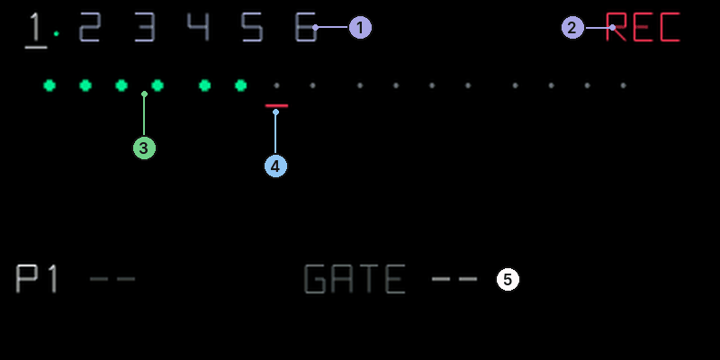
- 1Slots 1 to 6. The underlined one is selected
- 2REC: recording is on
- 3Steps with notes
- 4The cursor, moved by blue
- 5The step parameter on white
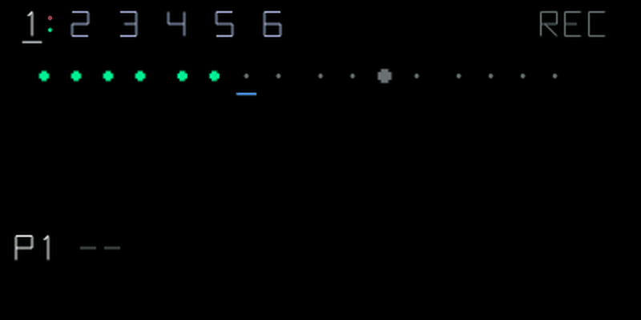
Recording controls
While is on:
| Control | Does |
|---|---|
| blue | Move the cursor. Shift + turn erases while moving |
| green | Slot length, 1 to 64. Shift + turn right fills up to the next row of 16, copying the row above; left goes back a row |
| white | Parameter value. Push to switch between choosing the parameter and setting its value |
| orange | Level of the step under the cursor, 1 to 127 |
| Push orange | Switch between step recording (REC) and live recording (LIVE) |
| Push blue | On an empty step: make a lock-only step. Push again to remove it |
In LIVE, keys you play while the slot runs are recorded at the playhead, rounded to the nearest step. Hold a key longer for a longer gate.
Step parameters
Push white, turn it to choose a parameter, push again and turn to set it.
| Parameter | Does | Range |
|---|---|---|
| GATE | Note length | 5 % to 100 %, or TIE |
| RATCH | Repeats within the step | 1 to 8 |
| CHANCE | Probability the step plays | 0 % to 100 % |
| COND | Plays only on loop a of b | ALL, 1:2, 2:2, 1:3 ... 4:4 |
| NUDGE | Shift the step in time | -12 to +12 ticks (of 96 per beat) |
| RAMP | Ratchet level ramp | OFF, UP, DN |
| FX1 to FX4 | Effect lock for the effect's blue to orange encoder | Off, or 0 % to 100 % |
An effect lock moves that effect encoder to the stored value when the step plays, and back after the gate. A lock-only step (hollow square) changes the effect without playing a note: a quick way to throw a single delay or a filter sweep into a pattern.
Quad LFO
Four LFOs in one, each with its own target. They can modulate the engine encoders, the envelope, the effect, and each other. Works on synths and drums.
- Press (or ), hold Shift and press .
- Turn blue to QUAD and press .
- Push an encoder to select its LFO: blue is LFO 1, green 2, white 3, orange 4. The selected row is underlined.
On the LFO page, switches the LFO off and on, like stock. If the page dims and says LFO OFF, press again.
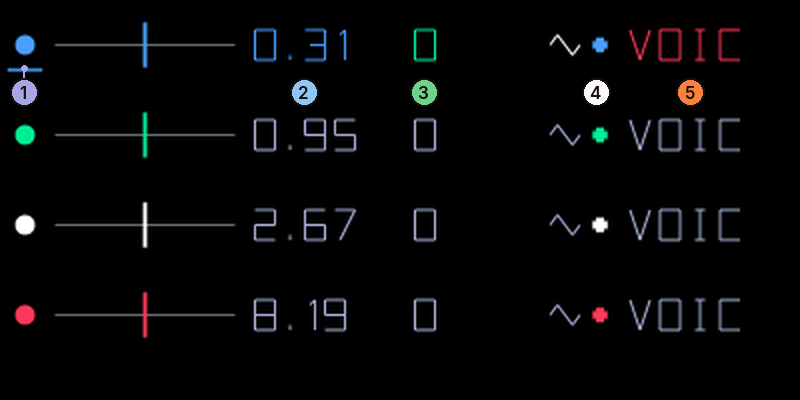
- 1The underline marks the selected LFO
- 2Speed on blue
- 3Amount on green
- 4Target on white. The dot's colour is the target encoder
- 5Type on orange
| Encoder | Main page (selected LFO) | Shift held (selected LFO, table of all four) |
|---|---|---|
| blue | Speed, 0.05 Hz to 20 Hz, or a tempo division | Phase offset, in 45° steps |
| green | Amount, -100 % to +100 % | Smoothing, 0 to 7 |
| white | Target | Wave: sine, triangle, ramp up, ramp down, square, sample & hold |
| orange | Type | Tempo sync on (turn right) or off (turn left) |
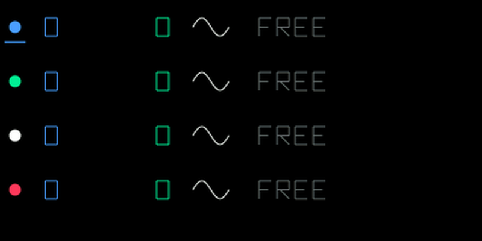
The targets are the four engine encoders, the envelope (attack, decay, sustain, release), the four effect encoders, and the frequency, amount or offset of any other LFO. Two LFOs on one target add up.
The types decide when the LFO restarts:
| Type | Behaviour |
|---|---|
| VOIC | One LFO per voice, free running |
| FREE | One LFO for all voices, free running |
| GATE | One per voice, restarts at every note |
| MONO | One for all, restarts at every note |
| SHOT | One cycle per note, then holds |
| RAND | A new random value at every note |
Sample editor
A proper editor for the sampler: trim, fade, normalise, reverse, set loop points and cut by transients. There is one for synth samples and one for sampled drum kits.
Open the editor
- Synth: load the SAMPLER engine, then hold and press .
- Drums: on a sampled drum kit, hold and press . Play a pad to edit it.
The same combination closes the editor and saves. Leaving for another mode closes it too.
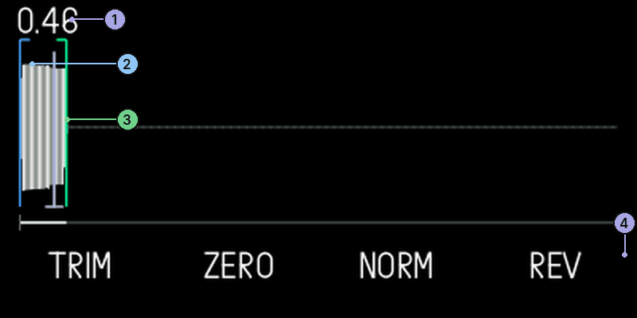
- 1Selection length in seconds
- 2Start marker on blue
- 3End marker on green
- 4What to do
Controls
| Control | Does |
|---|---|
| blue, green | Start and end markers. Keys play the selection straight away |
| Push blue | Switch blue and green to the loop start and end (synth only) |
| white | Zoom. Shift + turn moves the selection |
| orange | Volume of the whole sample, -60 dB to +24 dB, applied on close. Shift + turn scrolls |
| Push orange | Snap: zero crossings, transients, off |
| Trim to the selection. Shift: remove DC offset. Drums: fit (trim silence) |
| Zero the selection. Shift: fade |
| Normalise. Shift on drums: auto-cut |
| Reverse |
| Shift + | Undo a trim (synth) or the last auto-cut (drums) |
| , , | Copy, cut, paste the selection, also to tape or another sampler |
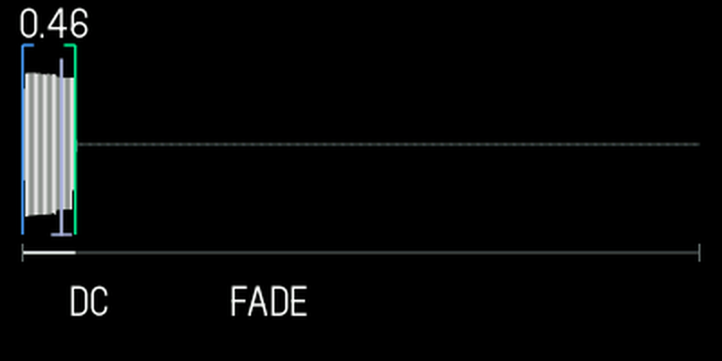
Fades: Shift + opens fade mode. picks in, out or both, picks linear, power or exponential, and blue sets the length. applies it, cancels.
Auto-cut (drums): Shift + . In hits mode it finds the first 24 hits, with blue as sensitivity. In equal mode blue sets 1 to 24 slices. applies, cancels.
Tape additions
Undo and redo
From Maiko Pruett's #249. Every recording, punch-in, overdub, lift, drop, slide, split and join can be undone, up to seven steps back.
- Hold and press to undo.
- Hold and press to redo.
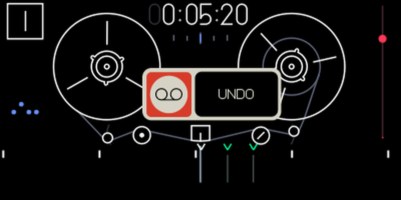
The history survives switching the OP-1 off and on.
Markers and punch-in
On the tape screen:
| Control | Does |
|---|---|
| Push orange | Set a marker at the playhead |
| Shift + push orange | Remove the marker under the playhead |
| Shift + turn orange | Jump to the next or previous marker, also while playing |
Up to 32 markers, saved with the tape. Plain orange still sets the record level.
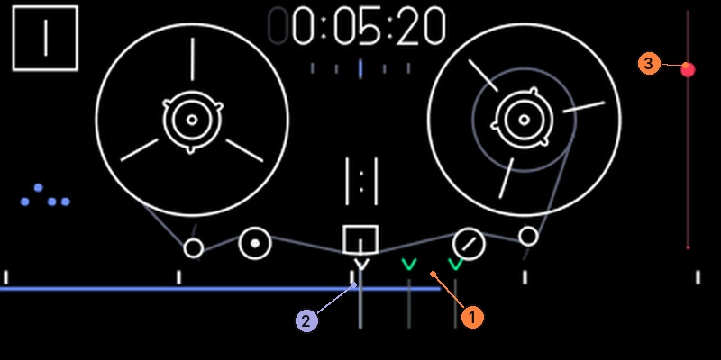
- 1Markers, set by pushing orange
- 2The playhead
- 3Record level, still on orange
Punch-in uses the markers. Hold and press to arm it: the markers turn red. Play the tape. Recording starts at the next marker and stops at the one after. Press  to stop, or + again to disarm.
to stop, or + again to disarm.
Count-in
With the tape stopped, hold and press . You get 4, 8 or 16 clicks, then the tape starts recording on the next beat. You can let go of . cancels. Set the length on the settings page.
The metronome also accents beat 1 of every bar, an octave higher. Bars count from the start of the tape, or from where a count-in recording started.
Fast tape erase
The stock erase gesture (Shift + , then press to together) now only clears the parts of the tape that have audio, so it takes seconds instead of minutes. It still can't be undone.
Maiko toolkit
Maiko Pruett's #249 additions. Undo and redo is in the tape chapter; the rest is here. The whole toolkit is one option in the workshop and is on by default.
FILE: what uses your storage
Hold Shift and press COM, then turn blue to FILE.
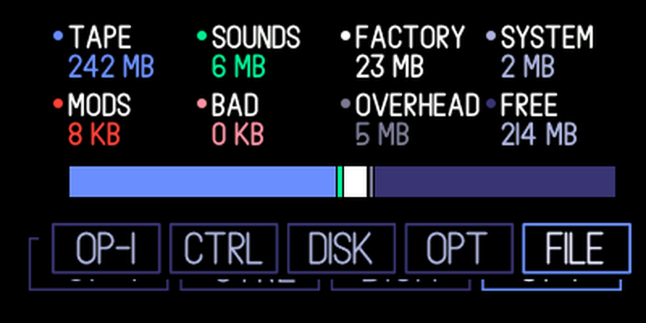
Tape and undo history usually take most of the space.
Scale mode
Locks the keyboard to a scale, so wrong notes stop sounding.
- Press , then .
- Hold Shift. The scale settings appear.
- Turn white to choose the key and orange to choose the scale.
- Let go of Shift and play. The strip shows which note each key now plays, and keys outside the scale are silent.
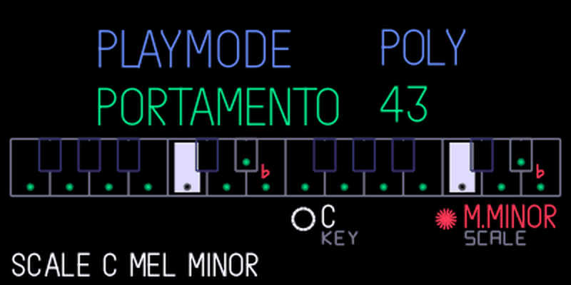
- 1Key on white
- 2Scale on orange
- 3The note each key plays in this scale. A dot marks a sharp
The scales are major, minor, dorian, phrygian, lydian, mixolydian, locrian, harmonic minor and melodic minor. Turn orange to OFF to get the full keyboard back.
Name your sounds
- Hold a sound key (1 to 8) to save as usual. Keep holding: a tape-reel screen with letters appears.
- Turn blue to move one letter, green to move one row.
- Push blue to add the letter. Press to delete one.
- Press the same sound key again to save with that name.
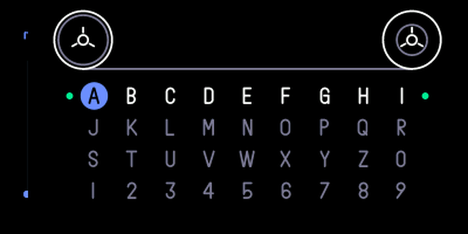
Names are up to 12 letters and digits (a to z, 0 to 9). If the name exists, the new sound gets _1 added. Leave it empty to get the usual date-stamp name.
System pages
Oblique Strategies
Shift + shows the clock or a random card from Brian Eno and Peter Schmidt's Oblique Strategies, whichever you looked at last. Press Shift + again to switch between them. A new card turns up each time you switch to it.
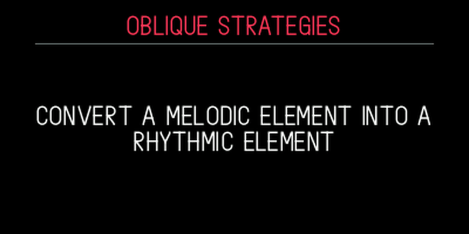
From either view, , , and open the resource monitor, USB output, settings and chord mode.
Resource monitor
Shift + , then . Shows CPU, audio load (with a peak marker), memory, disk and MIDI buffers. Use it to see how much a heavy sound costs. again closes it.
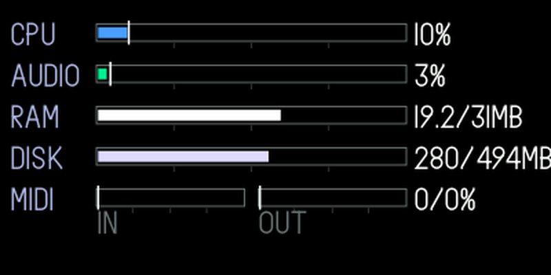
USB output
Shift + , then . Turn blue to choose MASTER or MASTER + TRACKS.
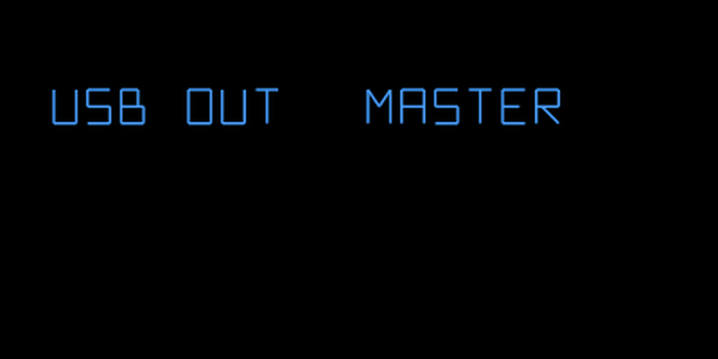
With MASTER + TRACKS the OP-1 sends six channels to the computer over USB: main left and right on 1 and 2, and the four tape tracks on 3 to 6, before the faders. MASTER (the default) saves 5 to 7 % CPU. Tested on macOS and Linux. On Windows, remove the old OP-1 audio device if it still shows two channels.
Settings
Shift + , then . Turn blue to set the count-in to 4, 8 or 16 beats.
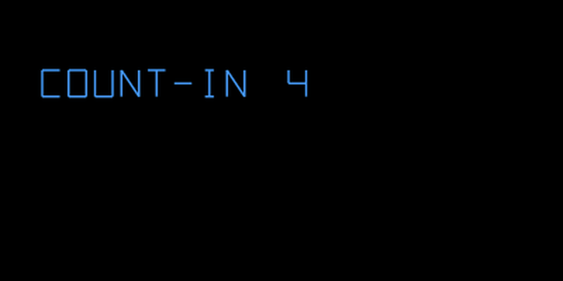
MIDI control
Over USB MIDI, on the OP-1's MIDI channel, a computer or controller can press keys and turn encoders.
- Keys: a CC number presses a key (value 64 or more) or lets go (below 64). Examples: 5 help, 6 metronome, 7 to 10 synth, drum, tape and mixer, 11 to 14 T1 to T4, 38 REC, 39 PLAY, 40 STOP, 43 Shift, 49 COM.
- Encoders: CC 102 to 105 turn blue to orange. Values 1 to 63 turn right, 65 to 127 turn left.
- Mixer: CC 106 to 109 set track volume, 110 to 113 pan, 114 to 117 mute, and 118 tape input level.
MIDI sync: when the OP-1 syncs to MIDI, MIDI START restarts the pattern sequencer, Euclid and Dots so the first step lands on the master's first clock.
OP-Z controller mode is a hidden stock mode that op1r makes reachable from a computer by SysEx. Most people won't need it.
Presets
The preset pack from the workshop is matched to your build. With everything selected it has 112 presets:
| Group | Presets |
|---|---|
| op1r engines (always) | 12 each for Supersaw, FM Bell, Granular and Iter |
| hundekraft synths | 12 each for Wavetable, Taffy, Pew and Elg |
| Effect pairs | 2 per hundekraft synth for each of Washer and Snowglobe |
The effects have no presets of their own: the 16 effect pairs are synth sounds that use Washer or Snowglobe. Good ones to start with are Warm Ensemble, Frozen Toffee, Midnight Mass and Aurora. The Musica Obscura sounds have no presets in the pack.
See Install the presets for how to get them onto the OP-1.
Troubleshooting
The OP-1 hangs on the boot screen. Hold COM while switching on and install a new build. If you went back to stock or an older build, a saved sound may use an effect that firmware doesn't have; see Go back, or get unstuck.
The workshop rejects my firmware file. It only accepts the original, unmodified op1_246.op1. Get a fresh copy from Teenage Engineering.
Granular makes no sound. It needs a recording first. See Granular.
Dots won't start. Switch recording off with before you turn orange. See Make Dots play.
C# doesn't start the sequencer, or mute all doesn't work. Scale mode is on. See Scale mode.
Black keys don't play chords. Scale mode snaps them away. Switch it off.
Presets went missing after syncing. You went over the preset limit. Build with the 300 limit, or install fewer.
In a room is silent. Push orange to capture a loop first. Large rooms hum very low.
My old reverb sounds wrong. It was saved before op1r 24; mix and tone are swapped. Turn them back.
Credits
hundekraft is an independent project, not affiliated with Teenage Engineering. It patches Teenage Engineering's OP-1 firmware R246 in your browser.
- op1r by pcppcp, the foundation of this firmware: github.com/pcppcp/op1r. Source under GPL-3.0-or-later. Clouds and Reverb are ports of Mutable Instruments' Clouds and Elements by Émilie Gillet. The Reverb screen art is by DAN76. The Iter lab screen comes from op1repacker.
- Musica Obscura by ultralazr: github.com/ultralazr/op1-musica-obscura. Texts, screens and sounds under CC BY 4.0, code under GPL-3.0-or-later.
- #249 toolkit by Maiko Pruett: maikopruett.com/op-1.
- Oblique Strategies cards by Brian Eno and Peter Schmidt. op1r's card screen comes from ultralazr's op1-oblique-strategies.
- hundekraft synths, effects, chord mode and the workshop by Hundekraft: github.com/Hundekraft/op1-workshop.
OP-1 is a trademark of Teenage Engineering. Their guide for everything stock: teenage.engineering/guides/op-1/original.